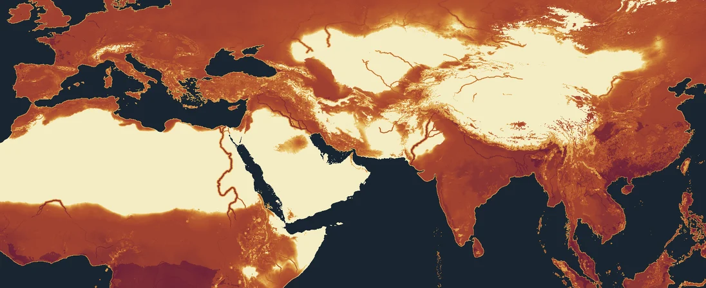

How the numbers are made
- Monthly temperature and rain come from the climate fit of the map (the free-fit world), with the day/night swing learned from Earth.
- Evaporation demand: Hargreaves & Samani (1985) from temperature, the day/night swing and the sunlight of the world's latitude and tilt. A 100 mm soil holds water between months.
- Each staple of a Han and Parthian world (wheat, barley, foxtail millet, paddy rice, date palm) is tried in every season it could fill: its temperature window, its heat sum and its water balance (FAO-33 yield response; under a third of its water, it fails). Land near the rivers is watered: fully within a few km of a navigable river, partly along streams.
- Yields are low-input yields of the period: about 1 t/ha of wheat or barley, 0.9 t/ha of millet, 1.8 t/ha of paddy, 3 t/ha of dates; net of hulls, milling and seed.
- People = calories × arable share (by drawn terrain: lowland 85 %, upland 75 %, hills 45 %, mountains 8 %) × 60 % of that in fields × 68 % of the fields sown each year (all of them where a second crop fits) ÷ 1.1 million kcal a person needs a year, losses and draft animals included.
- The sown share is the one number fitted: run on Earth's climate, the same rules give the Han North China Plain the 29.4 million people its AD 2 census counted. Every other region below is a test.
It is a ceiling: how many farmers the land could carry once fully settled, not how many live there. On Earth, the old cores of the period lived near it; frontier provinces held a tenth to a third of it.
Checked against Earth
The same rules, run on Earth's own climate (WorldClim) with Natural Earth's rivers, against populations of the period (hover a row for its sources). Share is the people who lived there over the people the land could feed.

The same rules on Earth's own climate, Atlantic to Pacific, 0–56°N. The Nile, the Indus and Mesopotamia stand out from their deserts; Sichuan and the rice south of China are the richest land; deserts and the Tibetan plateau feed almost no one.
| Region | Could feed | Lived there | Share |
|---|
Where a region is known by its density, that density is applied to the land of the outline used here. The old cores (the Han plains, the Wei valley, Syria, Italy) lived near the ceiling; Egypt is above it because Natural Earth draws only two branches of the Delta, so most of the Delta gets no river water here. The Roman West, Mesopotamia under the Parthians and the Han south held a tenth to a quarter of what their land could feed.
Checked against the campaign sheet
Sources
Hargreaves & Samani 1985, Applied Engineering in Agriculture 1:96. Allen et al. 1998, FAO Irrigation and Drainage Paper 56. Doorenbos & Kassam 1979, FAO-33 Yield response to water. FAO GAEZ v4 (length of growing period, slope classes). Lieth 1975, Miami model. Galor & Özak 2016, Caloric Suitability Index. Craig, Snow & le Sueur 1999, Parasitology Today 15:105 (MARA). Fick & Hijmans 2017, WorldClim 2.1.